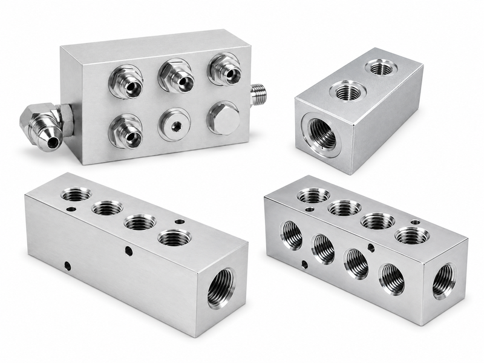
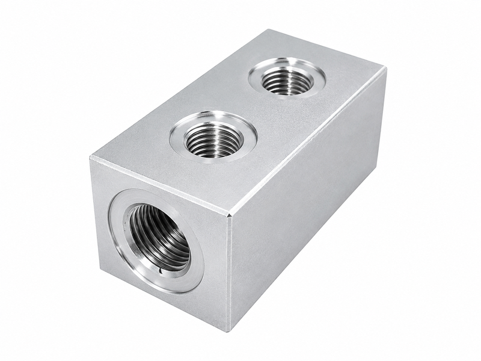
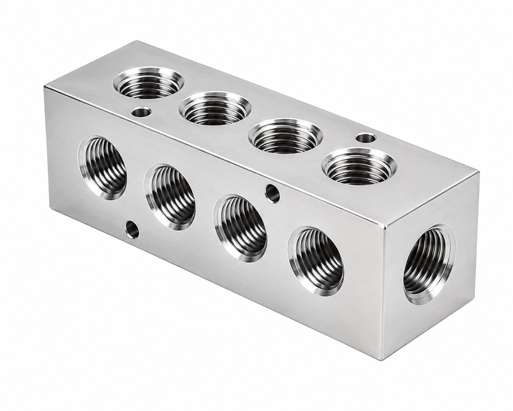
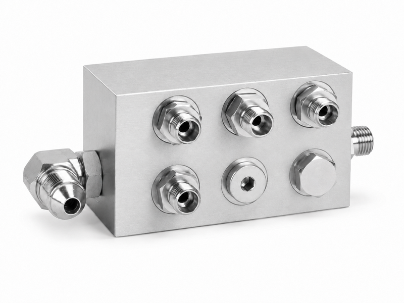
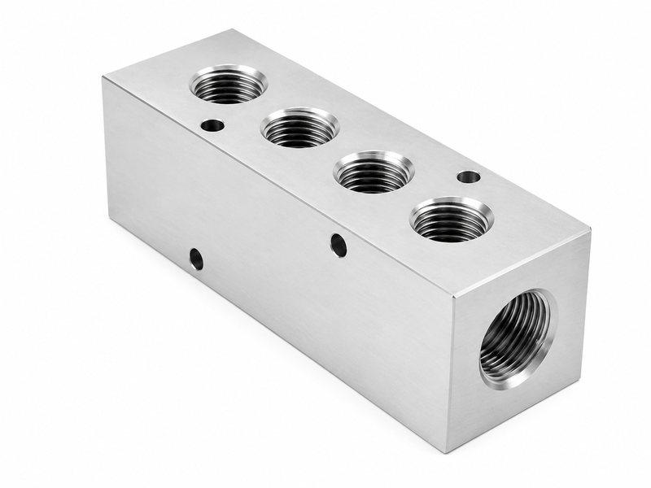

Welding Parts





Hydraulic manifold blocks are precision-machined metal blocks used to distribute, control and connect hydraulic oil flow inside compact hydraulic systems. They integrate multiple ports, threaded cavities, valve mounting surfaces and internal flow passages into one component, reducing external piping and improving system organization. Manifold blocks can be manufactured from aluminum, carbon steel or stainless steel according to pressure and application needs. They are used in power units, cartridge valve systems, mobile machinery and industrial hydraulic equipment.
| Product Type | hydraulic manifold blocks, valve manifold blocks and custom hydraulic blocks |
| Material Options | aluminum alloy, carbon steel, stainless steel or ductile iron |
| Port Types | BSP, NPT, SAE, metric, ORFS, JIC or customer-specified ports |
| Valve Cavities | cartridge valve cavities, check valve cavities and pressure control ports |
| Manufacturing Method | CNC milling, drilling, tapping, boring and internal passage machining |
| Surface Treatment | anodizing, zinc plating, black oxide, phosphating or natural metal finish |
| Inspection Items | port position, thread accuracy, cavity dimensions and pressure cleaning |
| Pressure Range | designed according to hydraulic circuit pressure and material selection |
| Design Input | hydraulic schematic, 2D drawing, 3D model or sample block |
| Customization | flow path, mounting hole, valve layout and surface finish can be customized |
Integrated internal flow passages reduce external pipes, adapters and potential leakage points
Compact block design improves hydraulic system organization and installation efficiency
Precision port machining helps ensure accurate connection with valves, hoses and fittings
Custom valve cavity machining supports cartridge valve and modular hydraulic circuit designs
Multiple surface treatments can match corrosion, appearance and operating environment needs
CNC-machined mounting surfaces support stable valve installation and sealing
Pressure cleaning helps remove chips and contamination from internal passages
Aluminum blocks are suitable for lightweight systems and moderate pressure applications
Steel blocks provide higher strength for heavy-duty hydraulic equipment
Custom port labeling and layout can improve assembly and maintenance efficiency
Manifold design can simplify hydraulic circuit troubleshooting and component replacement
Repeatable CNC production supports OEM supply and consistent batch quality
Integrated manifolds can shorten assembly time by replacing many loose fittings with one machined block.
Clear port planning helps technicians identify pressure, tank, actuator and control lines more easily.
Custom block design can reserve future ports for optional valves or system upgrades.
Tell us your requirements and we'll provide a detailed quote within 24 hours.